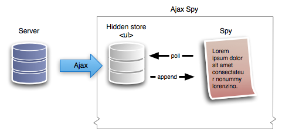

New
New


 Play QuickTime version
Play QuickTime version  Play Flash version
Play Flash version
Watch
Watch the jQuery Ajax spy screencast (Alternative flash version)
QuickTime version is approximately 45Mb, flash version is streaming.
View the demo used in the screencast (view the source for the Ajax response)
Breaking down the problem
My key priority for me, when I’m writing code that will make Ajax hits, is that where possible, I’m throttling the number of hits. By this I mean, I’m only performing Ajax requests when I absolutely have to.
To achieve this, I’ll show you in the code where I have created a hidden store of the Ajax response that I use to populate the spy at the preset interval. This gives the impression of real-time data. It’s almost real-time, and since we’re not working with finance systems or data that absolutely has to be real-time, it’s acceptable.
The way this is achieve is that we create a hidden store, in our case a ul element, and collecting the Ajax results in the ul. At the same time, the spy is requesting the latest (i.e. the top) li element in our store. When the store gets down to the last item, it refills itself.
It might sound a bit fiddly, but it’s a very straight forward change to the previous spy.
Here’s a visualisation of, roughly, what’s going on:

HTML
As per the original spy, we simply prepare a contain (prefill for those without JS) of latest products:
<ul class="spy">
<li>
<!-- contents of list item -->
</li>
</ul>Server Side
I’ve created a dummy server spy which you can view the source for. It’s nothing special, and for the demo, doesn’t use a database. It creates an array of data, randomises it and then loops through 5 of the results returning HTML.
In a production environment, I would expect this to make use of the database, and grab perhaps slightly more items to show in the spy.
jQuery (changes)
Since our starting point is the simple spy, I wanted to show where you need to make adjustments to ajaxify the script.
You may want to download the original simple spy.
Creating the Store
The first job is create the ‘caching’ store that will hold the Ajax results, and will refill itself when it’s almost empty.
With in the plugin code (but before return this.each()) we create a new function.
It needs to achieve the following tasks:
- Return the lastest/top item from the store.
- Remove that top item from the store.
- If we’re returning the last item from the store, refill via an Ajax hit
function getSpyItem($source) {
// find all the li direct descendants in the store ($source is a ul)
var $items = $source.find('> li');
// if we only have 1 left, we need to do an ajax hit to get more
if ($items.length == 1) {
// do an hit to get some more
// see playschool: ajax load for a screencast on .load
$source.load('ajax-spy-helper.php');
} else if ($items.length == 0) {
// if there are none left, then return false and handle it properly.
return false;
}
// grab the first item, and remove it from the $source
return $items.filter(':first').remove();
}Changing the Spy Function
Originally the spy cached a copy of all the li elements and looped round them. We had a bit of logic to handle tracking whether we reached the end or not. With the Ajax version we don’t need any of this code – since our store should be infinite (since we’re getting it live from the server).
Where we had this code:
var $insert = $(items[currentItem]).css({ // ...Which reads the items array, we’ll change this to use the getSpyItem function:
var $item = getSpyItem($source); // $source is declared early (see below)
if ($item != false) { // i.e. there's a result to work with
var $insert = $item.css({ // ...
}We will also remove the currentItem logic within the spy function (and remove the declarations too – i.e. var currentItem since we don’t need it anymore).
Initialising the Spy
Now that our code is nearly ready, we need to make sure we initialise properly.
The tasks we have left are:
- Create the store, and save it in the
$sourcevariable (as used above) - Only show
liaccording to thelimit, and move the remainder in to the$sourceulelement.
Within the this.each() initialisation block, we’ll create our store, at the same time we hide it and append it to the DOM:
var $source = $('<ul />').hide().appendTo('body');Then change:
$list.find('> li').filter(':gt(' + (limit - 1) + ')').remove();To the following, so that the ‘left over’ elements are in the store, ready to be grabbed in getSpyItem:
$list.find('> li').filter(':gt(' + (limit - 1) + ')').appendTo($source);And Finally…
We can add a mouse over to pause the spy. It’s very simple.
In the spy function, we wrap the logic that grabs new items with:
if (running) { // rest of spy codeHowever, make sure the setTimeout recursive call is outside this if statement so that it keeps checking.
Then we bind two custom events to the spy in the initialisation phase of the plugin:
$list.bind('stop', function () {
running = false;
}).bind('start', function () {
running = true;
});And finally, when we attach our plugin, we can trigger the stop and start events when the mouse enters and leaves (note I’m using enter/leave rather than in/out):
$('ul.spy').simpleSpy().bind('mouseenter', function () {
$(this).trigger('stop');
}).bind('mouseleave', function () {
$(this).trigger('start');
});You should follow me on Twitter here I tweet about jQuery amongst the usual tweet-splurges!